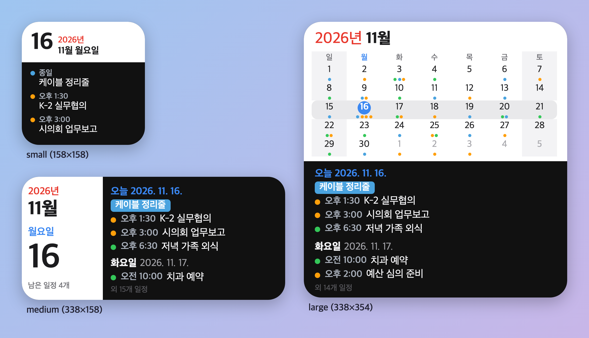

JB's 캘린더 위젯
아이폰 홈 화면 위젯입니다. 무료 앱 Scriptable로 동작하고, 아이폰 캘린더(구글 계정 포함)의 일정을 보여 줍니다. 계정·비밀번호를 넣지 않습니다.

방법 1. 코드 복사해서 붙여넣기
- 아래 버튼을 누르면 위젯 코드가 복사됩니다.
- Scriptable 앱 → 오른쪽 위 ＋ → 빈 화면을 길게 눌러 붙여넣기 → 위쪽 제목을 「JB 캘린더」로 바꾸고 Done.
방법 2. 설치 도우미 (나중에 업데이트도 쉬움)
- 아래 버튼으로 설치 도우미 코드를 복사 → Scriptable ＋ → 붙여넣기 → 제목 「위젯 설치」 → Done.
- 「위젯 설치」를 눌러 실행하면 「JB 캘린더」 스크립트가 자동으로 생깁니다. 다시 실행하면 최신판으로 바뀝니다.
자세한 설명: 「위젯 설치 안내」 문서를 참고하세요. 코드 보기: JBCalendarWidget.js · install.js